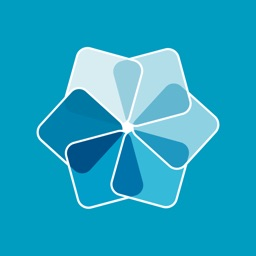

QA-SHOWCASE

- Client
- Showcase Software Ltd
- HQ
- Wellington, New Zealand
- Role
- Software Quality Assurance
- Period
- Jan 2015 – Jan 2025
- Type
- Long-term engagement
- Platform
- iPhone, iPad, Android, Chrome, Windows
- Tracker
- GitHub (private repo)